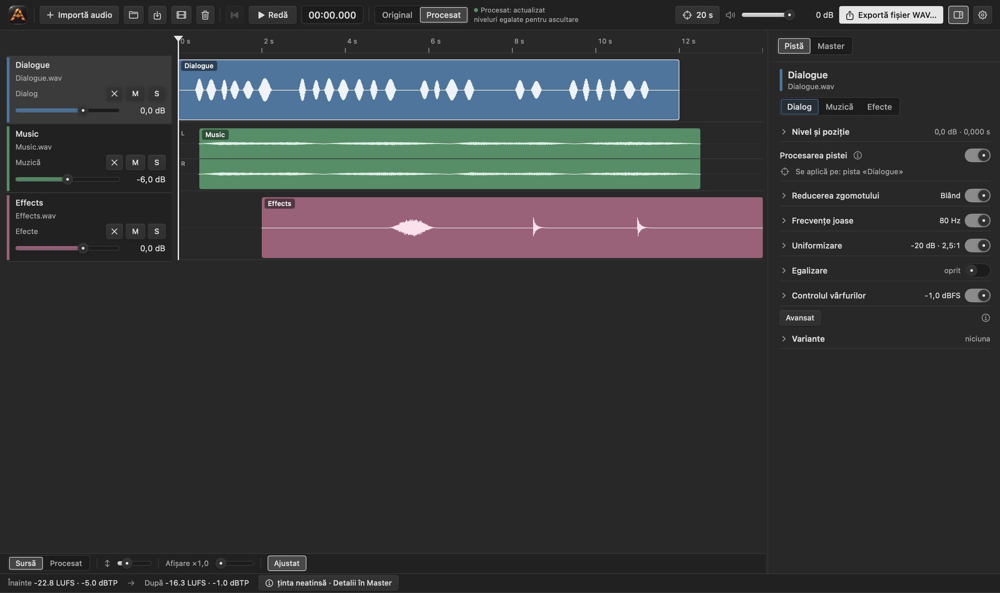

Sunetul filmului tău,
limpede și echilibrat.
AFON pregătește și mixează sunetul unui video pe Mac: curăță dialogul, așază muzica și efectele sub voce, aduce mixul la loudness-ul ales și îl exportă — sau îl trimite înapoi în DaVinci Resolve Studio.
Dialog, muzică, efecte.
Fiecare la locul lui.
Imporți pistele, le dai un rol și asculți imediat diferența dintre original și procesat, la niveluri egalate — ca judecata să nu fie păcălită de volum.

Funcții disponibile
în versiunea actuală.
Doar ce există și a fost verificat în aplicație. Originalele tale nu sunt modificate niciodată.
Procesare pe pistă
Reducerea zgomotului de fond (local, fără rețea), tăierea frecvențelor joase, uniformizarea nivelului, egalizare și controlul vârfurilor — fiecare cu propriul comutator.
Master
Muzica scade cât se vorbește, echilibru între roluri, loudness-ul mixului exportat (LUFS) și plafon de vârf (dBTP), cu rezultatul măsurat afișat.
Comparare cinstită
Original / Procesat la niveluri egalate, variante A/B pe pistă și previzualizare rapidă de 20 de secunde de la cursor.
Video de referință
Imaginea sincronizată la cadru, monitor integrat sau detașat și extragerea sunetului video ca pistă.
Formate
WAV (PCM 16/24/32 sau float 32) și AIFF/AIFC; fișiere multicanal până la 64 de canale, păstrate sincron. Fade-in / fade-out pe pistă.
Export
Fișier WAV cu raportul de măsurători alături și, opțional, stem-urile procesate — scrise ca o singură operație: dacă ceva eșuează, exportul anterior rămâne neatins.
RO · EN · ES
Interfață și manual de utilizare în română, engleză și spaniolă; teme Sistem / Luminos / Întunecat și două stiluri vizuale.
Din cronologie în AFON.
Și înapoi.
Fereastra AFON din Resolve (Workspace › Workflow Integrations) trimite montajul în aplicație. Acolo atribui rolurile, procesezi și asculți; apoi „Trimite în DaVinci Resolve” adaugă rezultatul pe piste noi, sincron, fără să atingă pistele originale.
În Resolve compari Original și AFON, restabilești stările de ascultare și poți reveni la o variantă anterioară a rezultatului.
AFON este un produs GDC independent. Nu este dezvoltat, aprobat sau susținut de Blackmagic Design. DaVinci Resolve este marca deținătorului său.Clar de la început.
- Nu este un DAW complet: fără înregistrare, tăiere de clipuri, automatizări sau pluginuri terțe.
- Din Resolve nu se preiau nivelul, panoramarea, EQ, procesarea Fairlight, tranzițiile sau automatizările.
- Premiere Pro și Final Cut Pro nu au integrare directă: exporți audio, îl procesezi în AFON și reimporți WAV-ul.
- Valorile de loudness sunt setări AFON, nu standarde de livrare universale: verifică cerințele platformei tale.
Descarcă AFON pentru Mac.
Versiunea 0.6.2 · pachet de instalare .pkg semnat și verificat de Apple · 17.8 MB.
SHA-256: 59896ce7190a03be6389da834499222df381d423a556928d82d30442a341338d
Ceri din aplicație proba completă de 5 zile, cu toate funcțiile; după aprobare, cele 5 zile încep la prima activare, o singură dată pe calculator. Continuarea se cere tot din aplicație.
Ai deja AFON 0.6.0 sau 0.6.1? Descarcă și instalează o singură dată 0.6.2 de aici, peste versiunea existentă, fără dezinstalare. Licența, proba și proiectele rămân; de la 0.6.2 încolo actualizările se instalează din aplicație.
Instalare
1. Descarcă pachetul și deschide-l cu dublu-clic.
2. Urmează pașii instalatorului (cere parola Mac-ului tău).
3. Deschide AFON din Aplicații, apoi Licență › „Probă 5 zile” › Trimite cererea.
4. Pentru integrare, repornește DaVinci Resolve Studio și deschide Workspace › Workflow Integrations › AFON.
Întrebări sau interes pentru lansare? Scrie-ne pe WhatsApp.
Cerințe
macOS 27 (verificat pe macOS 27.0.1) · Mac cu Apple silicon (M1 sau mai nou). Integrarea cere DaVinci Resolve Studio pe același Mac (verificat cu 21.2); aplicația funcționează și fără Resolve. Conexiune la internet pentru activare (fără rețea, o activare funcționează până la 7 zile între reconectări).